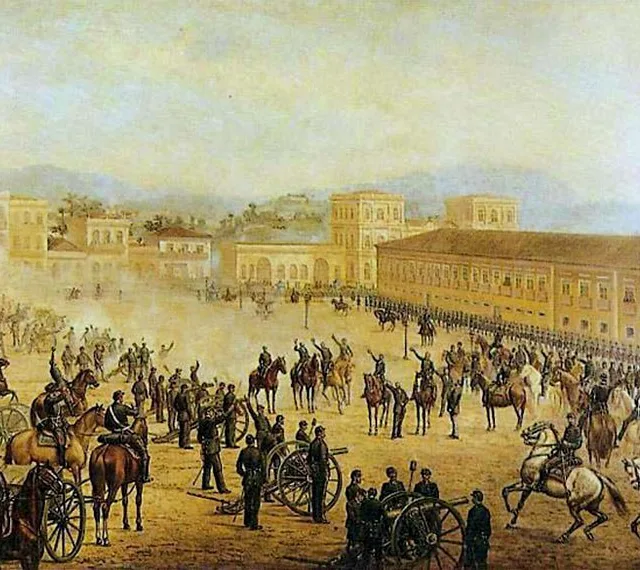
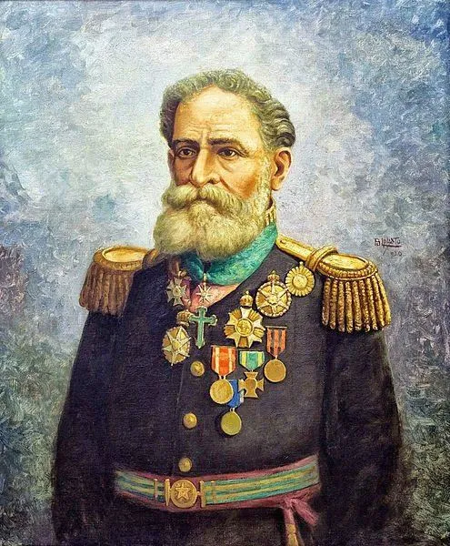
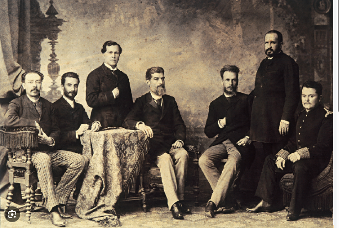
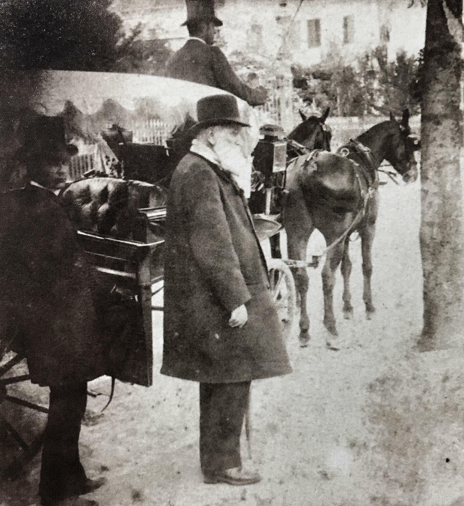

Galeria Histórica

Proclamação da República
Representação artística do momento histórico de 15 de novembro de 1889
Representação artística do momento histórico de 15 de novembro de 1889

Marechal Deodoro
Retrato oficial do primeiro presidente da República
Retrato oficial do primeiro presidente da República

Bandeira da República
A nova bandeira nacional adotada em 19 de novembro de 1889
A nova bandeira nacional adotada em 19 de novembro de 1889
Praça da República
Local onde foi proclamada a República no Rio de Janeiro
Local onde foi proclamada a República no Rio de Janeiro

Governo Provisório
Lideranças republicanas do final do século XIX, frequentemente associadas ao Governo Provisório (1889–1891)
Lideranças republicanas do final do século XIX, frequentemente associadas ao Governo Provisório (1889–1891)

Partida de Dom Pedro II
O último imperador deixando o Brasil rumo ao exílio
O último imperador deixando o Brasil rumo ao exílio